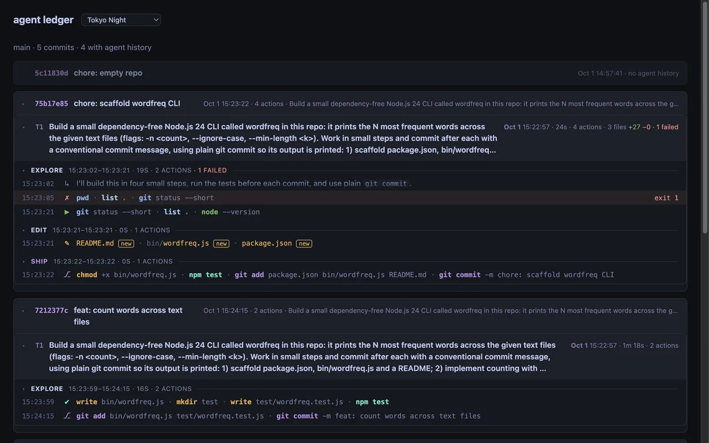
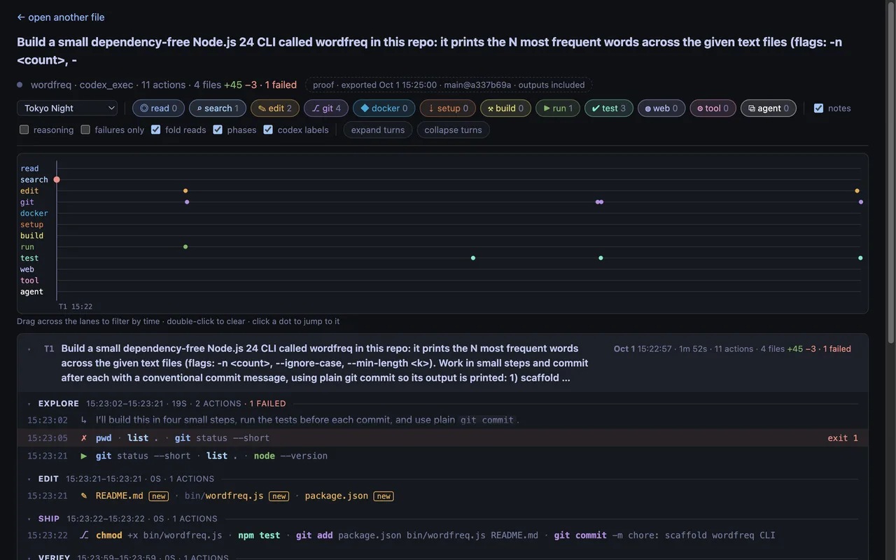
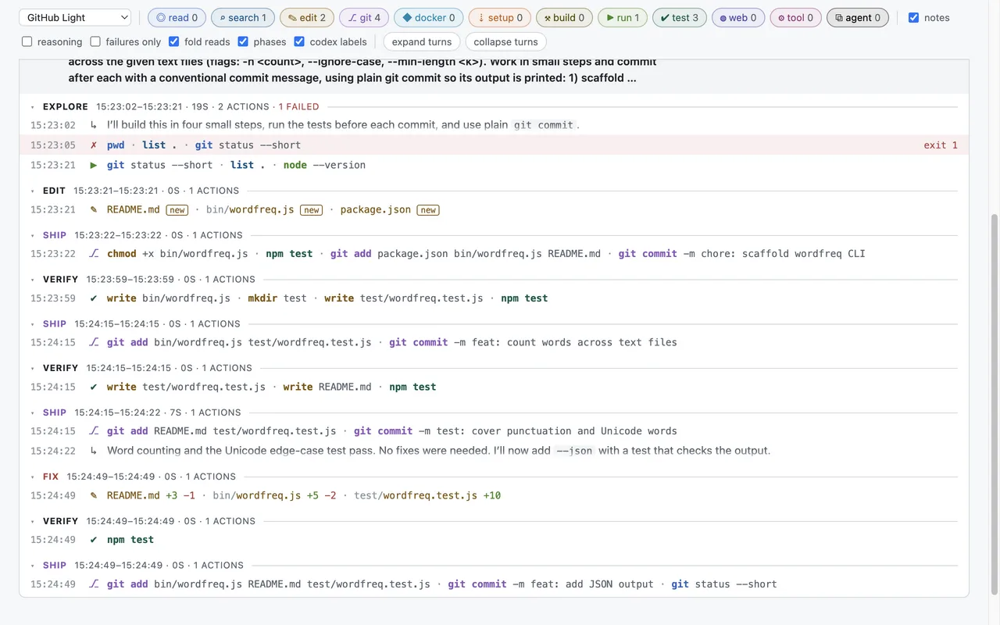
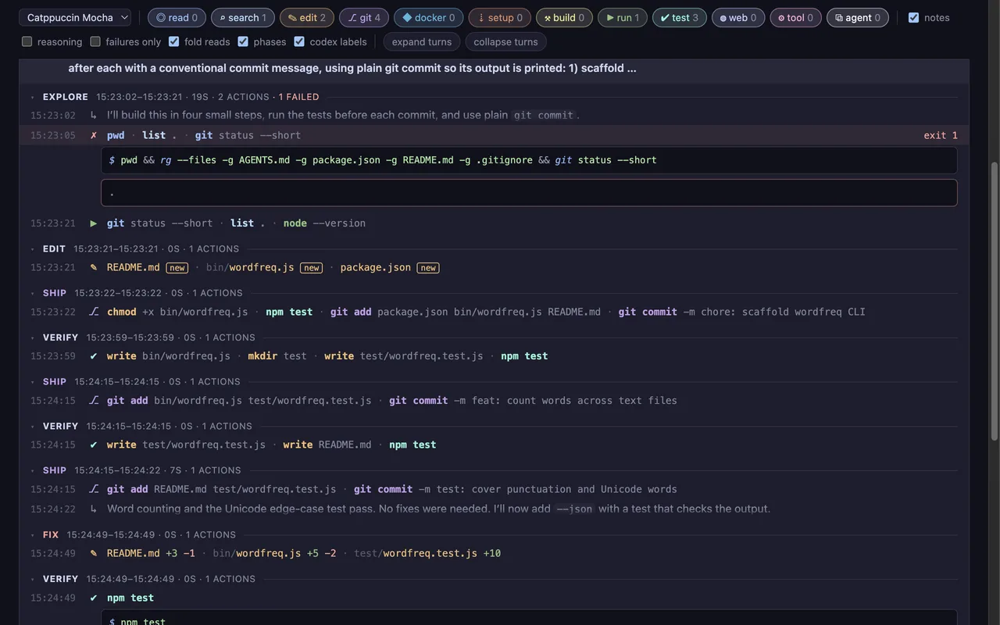

See what coding agents did, commit by commit, from your own repo.
toolreader reads agent sessions on your machine or CI runner and ties each one to the
commits it made. You get the prompts, commands, outputs and file edits behind a commit.
The history lives in git, on an agent-ledger branch next to your code. There
is no service and no account.
Open the demo
Four commits a codex exec run made in a small Node.js CLI. The demo needs
JavaScript; the rest of this page doesn't.
The viewer


toolreader serve, or a
proof-of-work file): a swimlane of actions over time above the turn → phase → action
tree. Drag across the lanes to filter by time.


How it works
-
An agent works in your repo and commits. toolreader reads Codex sessions (CLI, TUI,
Desktop,
codex exec) from their rollout files, and T3 Code threads (Codex, Claude, Cursor) from T3's database, read-only. -
toolreader ledger syncmatches each commit to the session that made it: by the SHAgit commitprinted, by time, or by a session you name. It writes one JSON entry per commit to theagent-ledgerbranch with git plumbing. Your branch, index and working tree stay as they were. -
A
pre-pushhook or a CI step runs the sync and pushesagent-ledgeralong with your code. Entries are separate files, so parallel CI jobs don't conflict. After a rebase or amend, entries are found again by patch-id. -
toolreader ledger sitebuilds one HTML file for a range, such as a pull request's base..head. It loads nothing from the network and opens fromfile://, a CI artifact or any static host.toolreader serveruns the same viewer locally, with live sessions.
What gets stored and published
-
Before an entry is written, toolreader redacts API keys, tokens,
Authorizationheaders, private keys,*_PASSWORD=and*_TOKEN=values and credentials in URLs. Outputs are clipped to 8 KB per action by default, or dropped with--no-outputs. -
Published pages redact again, name the repo by its remote's owner/name and write its
local path as
.wherever session text mentions it. - Pattern redaction doesn't catch customer names, internal URLs or source code. Read a page before you publish it. GitHub Pages sites are public except on GitHub Enterprise Cloud, so for private code keep the page as a CI artifact.
- The ledger is a record of what the sessions show. It isn't tamper-proof.
Install
toolreader isn't published to npm. Build the package from a toolreader checkout and install the tarball. It bundles all its dependencies. You need Node.js 24.
cd toolreader
pnpm install
npm pack # writes toolreader-0.1.0.tgz
cd ../your-repo
npm install --save-dev ../toolreader/toolreader-0.1.0.tgz
npx toolreader --helpQuick start
# Sync on every push: the hook records what you push and pushes agent-ledger too.
npx toolreader ledger hook install
# Or by hand, for a range.
npx toolreader ledger sync --range main..HEAD
git push origin agent-ledger
# List commits with their sessions, or build the page.
npx toolreader ledger show --range main..HEAD
npx toolreader ledger site --range main..HEAD --out ledger-site
open ledger-site/index.html
# The local viewer, with every session on this machine.
npx toolreader serve # http://127.0.0.1:4777
ledger site reads the local agent-ledger branch. In a fresh
clone, fetch it first: git fetch origin agent-ledger:agent-ledger.
CI
A composite GitHub Action in the toolreader repo (action/) installs the
package and runs ledger sync or ledger site. Two example
workflows; copy them to .github/workflows/ and point uses: at
wherever you keep toolreader.
An agent job that records its session
Codex's workspace-write sandbox blocks writes to .git, so the
agent edits and a later step commits. With a job-local CODEX_HOME,
--match-sessions ties that commit to the one session that edited the
workspace. The job needs contents: write to push agent-ledger.
agent-ledger.yml
A page for every pull request
Builds the page for base..head, uploads it as an artifact and links it from the job
summary. Publishing to GitHub Pages under pr/<number>/ is opt-in, with
the repository variable LEDGER_PAGES=true.
pr-ledger.yml
Next: a self-hosted service
The ledger branch works for one repo at a time. The next step is a service a team runs itself: one container image with Postgres and S3-compatible storage. The toolreader CLI on each machine and CI runner would upload agent sessions and verification proofs, such as a test report or a screen recording of the change working. The service would link them to repos, commits and pull requests and show them in the same viewer.
Self-hosted, coming next. It is a plan; none of it is built yet. The repo tool stays as it is and keeps working offline.